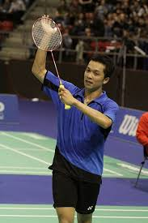
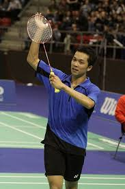
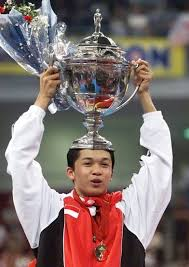
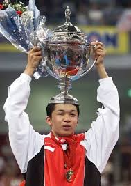

Taufik Hidayat
Nama Lengkap: Taufik Hidayat
Tempat, Tanggal Lahir: Bandung, 10 Agustus 1981
Kebangsaan: Indonesia
Cabang Olahraga: Bulu Tangkis (Tunggal Putra)
Taufik Hidayat memulai kariernya di dunia bulu tangkis pada usia yang sangat muda. Bakatnya yang luar biasa telah terlihat sejak masa kecil, hingga akhirnya dia bergabung dengan Pelatnas Cipayung, pusat pelatihan bulu tangkis nasional Indonesia. Karirnya melesat pada awal tahun 2000-an, dan ia menjadi salah satu ikon bulu tangkis Indonesia, dengan gaya bermain yang cepat dan teknik yang sangat terampil.
Pekerjaan:
Setelah pensiun dari dunia bulu tangkis pada tahun 2013, Taufik Hidayat terlibat dalam berbagai aktivitas di luar lapangan, di antaranya:
Pengusaha:
Taufik telah beralih menjadi pengusaha setelah pensiun. Salah satu usahanya adalah mendirikan Taufik Hidayat Arena, sebuah pusat pelatihan bulu tangkis di Ciracas, Jakarta, yang bertujuan untuk melahirkan pemain-pemain bulu tangkis muda berbakat.
Keterlibatan di Dunia Olahraga:
Taufik juga sering terlibat dalam berbagai kegiatan olahraga, baik sebagai komentator maupun duta untuk bulu tangkis. Ia juga aktif di bidang sosial dan kegiatan amal yang berhubungan dengan olahraga.
Politik:
Taufik juga sempat terjun ke dunia politik, dengan menjadi anggota tim sukses dalam beberapa kampanye politik di Indonesia.
Prestasi
Medali Emas Olimpiade Athena 2004
Juara Dunia 2005
Enam Kali Juara Indonesia Open
Juara Asian Games
Pemenang All England 1999 (Finalis)
Piala Thomas
Galeri Foto
.jpeg) 

.jpeg)
.jpeg)
.jpeg) 

Referensi
- https://www.viva.co.id/siapa/read/109-taufik-hidayat
- https://nocindonesia.id/athlete/view/taufik+hidayat
- https://sports.okezone.com/read/2023/11/14/40/2919997/kisah-taufik-hidayat-legenda-bulu-tangkis-indonesia-yang-hampir-dinaturalisasi-jadi-warga-negara-singapura